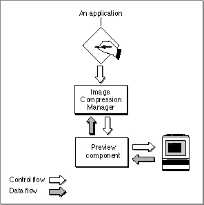

About Preview Components
Preview components provide two basic services: they draw and create previews. This section describes how preview components obtain preview data, what kind of information is stored with the file, and what they do with the preview data.Obtaining Preview Data
Preview components obtain data fromThe preview component can create a small data cache containing the preview. Although creation of the preview cache may be time-consuming, the cache can then be stored in the file and used to display the preview for the file rapidly on subsequent occasions. The picture file preview component, which creates a thumbnail picture for the file and stores it in the file's resource fork, is one way of getting information from a data cache.
- a small data cache
- a reference they create to another resource in the file
- the file for which they are invoked
The preview component can create a reference to another resource in the file. For example, some file types already contain a picture preview in them. The preview component can then create a pointer to that existing data, rather than making another copy of it. The movie preview component works in this way when the preview for the movie is actually the movie's preview, rather than only its poster picture.
If the preview component can display the preview for the file quickly enough in every case, there is no need for a cache. Such a preview component reinterprets the data in the file each time it is invoked, rather than creating a preview cache once. This method of getting the information allows the file to remain untouched, requires no disk space, and does not demand that the user or the application make any special effort to create the preview. Unfortunately, in most cases, it is not possible to interpret the data quickly enough to use this approach. Preview components that handle this type of preview should set the
pnotComponentNeedsNoCacheflag in their component flags field.enum { pnotComponentNeedsNoCache = 2 };If a preview component relies on other system software services, it must make sure they are present. For example, if your preview component uses the Movie Toolbox, it is responsible for calling the Movie Toolbox'sEnterMoviesandExitMoviesfunctions.When previewing is complete, the component receives a normal Component Manager close request. If you add any controls to the window, you should dispose of them while you are calling the Component Manager's
CloseComponentfunction.A preview component should never write back to the file directly. The caller of the preview component is responsible for actually modifying the file. You should open all access paths to the file with read permission only.
Figure 12-1 illustrates the relationships of a preview component, the Image Compression Manager, and an application.
Figure 12-1 Relationships of a preview component, the Image Compression Manager, and an application

Storing Preview Data in Files
A preview may or may not contain sound or text data or other types of information. In addition to the visual preview, QuickTime provides the preview resource, described on page 12-13, which also allows you to store
- a brief description of the file
- a list of keywords
- an associated language code to allow use of a single file in more than one region
- a modification date to help applications determine when the data has been changed
Using the Preview Data
Preview components maySome preview components only create a preview and rely on another component to display it. For example, by default, the movie preview component creates a picture preview for the file. This is displayed by the picture preview component.
- create a preview
- draw a preview
- create and draw a preview
Most preview components simply draw the preview. These are the simplest type of display components. They do not require any other event processing--including the scheduling of idle time--for example, to play a movie. The picture preview component is an example of this type of component.
Preview components that do not require a cache should have a subtype that matches the type of file for which they can display previews.
A preview component for sound would require event processing, since it would need time to play the sound. If your preview component requires event processing, you must have the
pnotComponentWantsEventsflag set in its component flags field.enum { pnotComponentWantsEvents = 1, };
Subtopics
- Obtaining Preview Data
- Storing Preview Data in Files
- Using the Preview Data